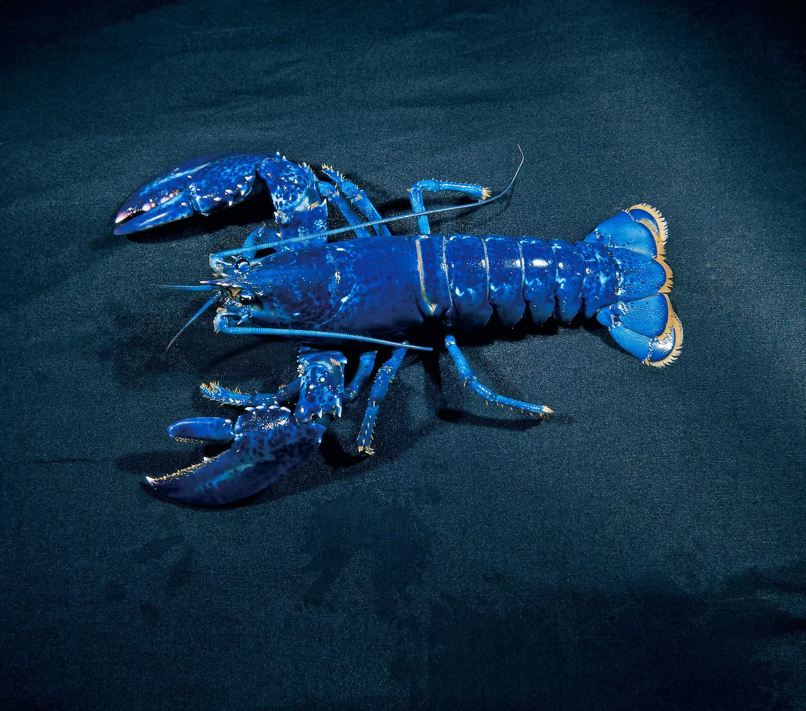

Humra vyloveného na západním pobřeží Francie měl potkat stejný osud jako jeho soukmenovce – měl se stát večeří. Od toho ho však zachránilo jeho atypické sytě modré zbarvení. Rybáři se kvůli němu rozhodli projevit soucit a vzácnému tvorovi našli nový domov.
Modrého humra rybáři ulovili u francouzského ostrova Île d'Yeu. Podle společnosti Les Viviers de Noirmoutier, která mořské plody prodává a pro niž rybáři pracují, je pravděpodobnost odchytu takto vzácného humra jedna ku dvěma milionům. Jde tedy o velmi unikátní nález, uvádí britský Daily Mail s odkazem na firmu. Společnost se rozhodla, že modrého humra pro jednou nezpeněží a místo toho se spojila s místní turistickou organizací, aby tvorovi našla nový domov, kde nebude nikým rušen. Ten má být ve vodách, kde je striktně zakázáno rybaření. Vyjma toho právě probíhá anketa, v níž mají lidé pro humra vymyslet vhodné jméno.